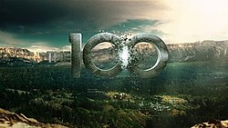

The 100
The 100 (pronuncia-se The Hundred: "Os Cem") é uma série de televisão de drama e ficção científica norte-americana de 2014, desenvolvida por Jason Rothenberg para a emissora The CW, baseada no livro homônimo (primeiro livro da série literária) de Kass Morgan. Foi transmitida originalmente de 19 de março de 2014 a 30 de setembro de 2020, e protagonizada pela atriz Eliza Taylor e Bob Morley.
Sinopse
A série se passa 97 anos após uma guerra nuclear devastadora que dizimou quase toda a vida na Terra. Os sobreviventes conhecidos são os moradores de doze estações espaciais em órbita da Terra, que já viviam nesta antes do fim da guerra. As estações espaciais se uniram para formar uma única estação, chamada "Arca", onde cerca de 2 400 pessoas vivem sob a liderança do Chanceler Jaha. Os recursos são escassos e todos os crimes, não importando sua natureza ou gravidade, são puníveis com a morte por ejeção ao vácuo espacial ("flutuação"), a menos que o autor do crime seja menor de 18 anos.
Depois de detectarem uma falha crítica nos sistemas de suporte de vida da Arca, 100 (cem) prisioneiros juvenis são declarados "dispensáveis" e enviados de forma coercitiva para a superfície em uma última tentativa de determinar se a Terra se tornara habitável novamente em um programa chamado "Os 100" (que da nome a série). Os adolescentes chegam em um belo planeta que apenas avistaram do espaço. Era suposto que eles encontrassem refúgio e suprimentos em uma antiga instalação militar chamada Mount Weather, mas aterrissaram um pouco distantes dela.
Confrontando os perigos deste mundo novo acidentado, eles lutam para formar uma comunidade experimental. No entanto, eles descobrem que nem toda a humanidade no planeta foi exterminada; algumas pessoas, chamados de "Terrestres", sobreviveram à guerra. Os 100 jovens enviados encontram vários sobreviventes da guerra nuclear. Os primeiros sobreviventes encontrados, vivem em uma forma de sociedade tribal e guerreira, e dispostos a defenderem seu território se tornam hostis. Enquanto isso, a "Arca" tenta monitorar os sinais vitais dos jovens exploradores na Terra, mas passa por uma crise política interna, que se agrava conforme seus recursos de sobrevivência se tornam escassos. A descoberta se a Terra é habitável e uma possível evacuação torna-se uma corrida contra o tempo, assim como a luta por sobrevivência dos 100, que estão em guerra com os "Terrestres".

Brasão da Série The 100
Crítica
O episódio piloto foi assistido por uma audiência estimada em 2.73 milhões de telespectadores. Sendo considerada a mais assistida em seu horário na emissora The CW desde 2010, com a série Life Unexpected.
No site Rotten Tomatoes, a primeira temporada da série foi avaliada como "fresh", com 72% da crítica especializada avaliando-a positivamente, com um consenso de que "embora seja inundada de estereótipos, a atmosfera de suspense ajuda a tornar The 100 um raro prazer culpado altamente conceituado". No site agregador de arte Metacritic, a primeira temporada possui uma avaliação de 63/100, indicando "críticas geralmente favoráveis".
A segunda temporada recebeu críticas mais favoráveis, com 100% no site Rotten Tomatoes. Em uma crítica do último episódio da segunda temporada, Kyle Fowle, do jornal The A.V. Club, disse: "Poucas séries conseguem empurrar os limites do compromisso moral de uma forma que parece legitimamente difícil. Breaking Bad fez isso. The Sopranos fez isso. Game of Thrones fez isso. Essas séries nunca recuam da escuridão filosófica de seus mundos, recusando-se a prover um final feliz e arrumado se não achar certo. Com o episódio "Blood Must Have Blood, Part Two", The 100 fez o mesmo, não evitou tratar das estacas moralmente complexas que passou a temporada inteira construindo".
Maurice Ryan, do site The Huffington Post, em outra crítica positiva, escreveu: "Posso dizer com toda certeza que raramente vejo um programa demonstrar o tipo de consistência e dedicação temática que The 100 tem demonstrado em suas duas primeiras temporadas. Esta é uma série sobre escolhas morais e as consequências dessas escolhas, e tem estado louvavelmente comprometida com essas ideias desde seu primeiro dia."
A terceira temporada também recebeu críticas bastante favoráveis, porém, uma porcentagem menor da crítica especializada a avaliou positivamente, com 89% no Rotten Tomatoes. No site IMDb, recebeu 7.8/10 pelas avaliações de seus usuários. O site Entertainment Weekly foi o primeiro a divulgar a crítica da terceira temporada de The 100: "O desenrolar dos efeitos colaterais na terceira temporada expande o mundo e rende temas ressonantes como xenofobia, terrorismo, inteligência artificial e religião".
A quarta temporada foi segunda com melhor critica especializada da série, com 92% no site Rotten Tomatoes, esta temporada de The 100 recompensa os espectadores de longa data com um olhar mais profundo sobre seus personagens favoritos, além de adicionar nuances e profundidades excepcionais às suas circunstâncias emocionantes. A revista Forbes, um dos meios de comunicação de maior influência mundial, teceu alguns elogios ao episódio final da série, na matéria com o título "Toda série deve aprender com The 100 como fazer um cliffhanger de final de temporada perfeito", o jornalista Paul Tassi disse que o gancho do último episódio "é um dos cliffhangers de final de temporada mais bem orquestrados que já assisti".